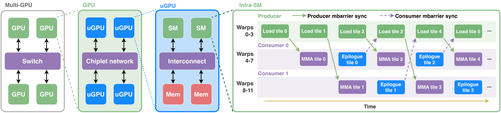
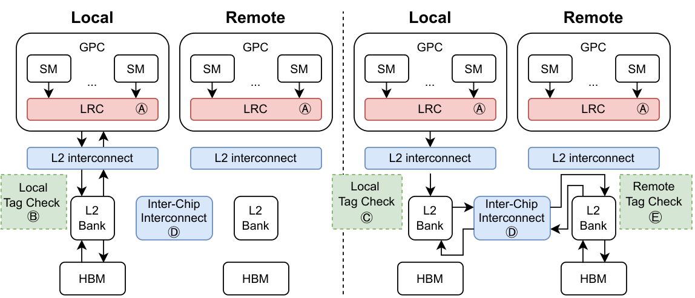
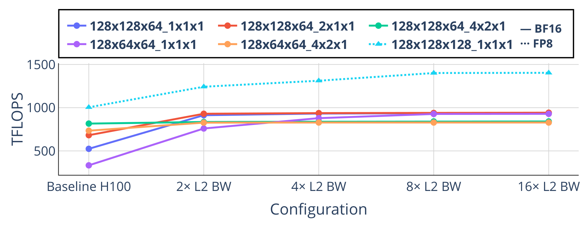
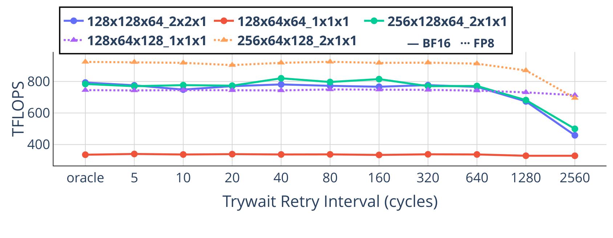
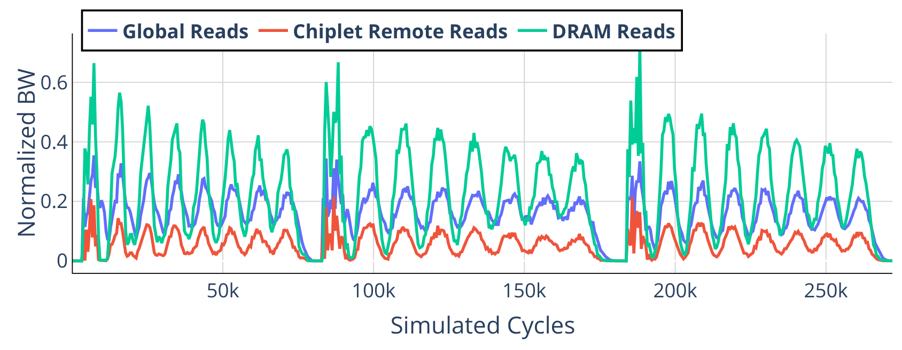
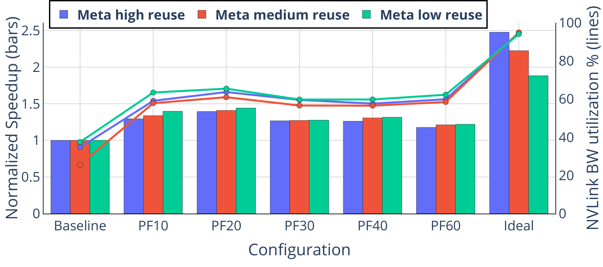
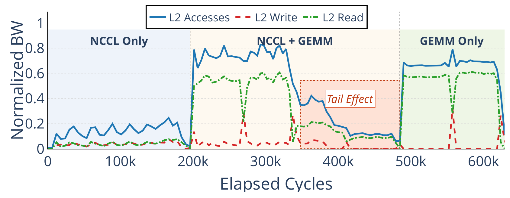
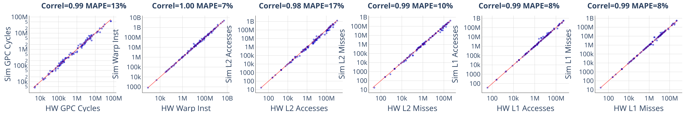
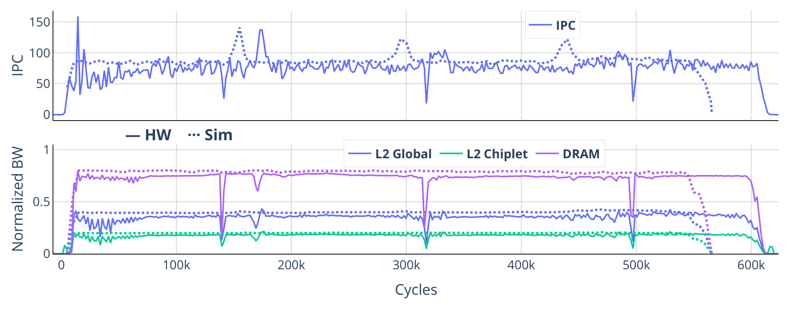

先说结论
论文还用这个基础回答三个架构问题：增加片上/片外带宽是否总能换来性能？异步同步的代价有多大？把单体 GPU 拆成 chiplet 后，LLM、图分析和 CNN 谁更容易受伤？
框架更新：从“回放 trace”走向动态建模

Accel-Sim 2.0 新增 TMA、mbarrier、warpgroup、threadblock cluster、chiplet-aware CTA scheduling、multi-GPU tracing 和动态寄存器值追踪。尤其关键的是 spinloop detection：把 trace 中受测量扰动的重复轮询压缩成 canonical pass，模拟时再根据真实依赖动态决定等待。

这不是细节堆砌：如果把远端访问、缓存复制或 barrier 简化掉，模拟器会把真正的瓶颈隐藏起来。
三个架构实验
实验一：带宽不是越多越好

大 cluster 能复用输入 tile，但受 cluster 必须放在同一 GPC、以及 H100 只有 120 个 active SM 的约束，反而可能出现占用率损失。FP8 kernel 在带宽解锁后仍受 FP32 accumulator promotion 的 SIMT 管线限制。
实验二：异步同步税通常被隐藏

实验三：chiplet 的 NUMA 代价

论文发现 LLM prefill 计算密集，能够吸收 chiplet 延迟；decode 局部性较弱，也不太依赖 L2 容量。但 MST 这类空间复用强的应用，在分区 L2 下明显退化。
规模化：跨 GPU 预取与并发尾部


这解释了为什么“通信和计算重叠”不等于“资源充分利用”：如果调度没有动态重分配，重叠会把尾部延迟隐藏到最后才暴露。
验证：模拟器是否可信？


GPUVision 不是模拟器，而是基于 CUPTI 的真实硬件 profiling 工具；二者配对后，研究者可以定位传统 Nsight 聚合指标看不到的时间行为。作者还报告：单 transformer block 的延迟乘以层数，与完整 Llama 3.1 8B 实测相比，prefill 误差 0.97%，decode 误差 3.06%。
表格逐项解读
表 I｜Accel-Sim 2.0 相比 1.x 增加什么
| 组件 | 1.x | 2.0 的关键扩展 |
|---|---|---|
| 执行单元 | HMMA | WGMMA、UTCMMA、warpgroup commit/wait、2-CTA |
| 内存 | 固定模型 | TMA、CGA multicast、distributed shared memory、HBM3e |
| 同步 | barrier | mbarrier、fence、WARPGROUP、UTCBAR |
| 观测 | 54 counters | 11,072 counters、cycle-level GPUVision |
表 I 说明能力提升来自“执行、内存、同步、追踪”全链路补齐，而不是单独提高某个 pipeline 的精度。
表 II｜MST：分区 L2 的代价
| Counter | H100 | H100 Monolithic | Chiplet/Monolithic |
|---|---|---|---|
| Kernel Latency | 272,134 | 219,456 | +24.00% |
| L2 Global BW | 31.6% | 38.2% | -17.25% |
| L2 Global Load MPKI | 228.07 | 122.32 | +86.46% |
| DRAM BW | 43.8% | 29.7% | +47.37% |
表 II 的逐项数据表明，MST 对分区 L2 和 NUMA 很敏感。
表 III｜FA-3 prefill：LLM 为什么更抗 NUMA
| Counter | H100 | H100 Monolithic | Chiplet/Monolithic |
|---|---|---|---|
| Kernel Latency | 3,429,039 | 3,429,661 | -0.02% |
| L2 Global BW | 45.5% | 44.0% | +3.42% |
| L2 Global Load MPKI | 59.54 | 49.45 | +20.40% |
| DRAM BW | 12.7% | 12.4% | +2.29% |
表 III 显示 LLM prefill 总延迟几乎不变，但缓存访问指标已经恶化，体现了“性能抗性”和“系统隐性成本”的区别。
表 IV-VI｜覆盖面与误差
表 IV 覆盖 BERT、ResNet、DLRM、3D U-Net、RetinaNet、Whisper、SDXL、FlashAttention、CUTLASS、Llama、DeepSeek、Qwen、Mixtral 等现代负载；表 V 补充 Rodinia、cuFFT、cuGraph、cuSolver、NCCL 等 HPC/系统负载；表 VI 给出 A100/H100/B200 的 suite-level MAPE，整体分别为 15.4%、13.5%、8.9%。这些表共同证明模拟器不是只对某一个 GEMM 或某一类 LLM 有效。
对 AIInfra 的启示
模型性能优化不能只看 FLOPS。对 vLLM、FlashAttention、NCCL 和多 GPU 推理，至少要同时观察：prefill/decode 分相、L2/远端访问、异步等待、通信尾部、SM occupancy 和 kernel 时间序列。Accel-Sim 2.0 的价值，是把这些因素纳入同一个可验证的 cycle-level 实验框架。
局限也很明确：cycle-level 仿真成本高，GPUVision 仍依赖硬件计数器质量，且论文的结果主要围绕 NVIDIA datacenter GPU。实际迁移到 3090 或其它厂商架构时，应重新校准 trace、内存层级和执行单元模型。